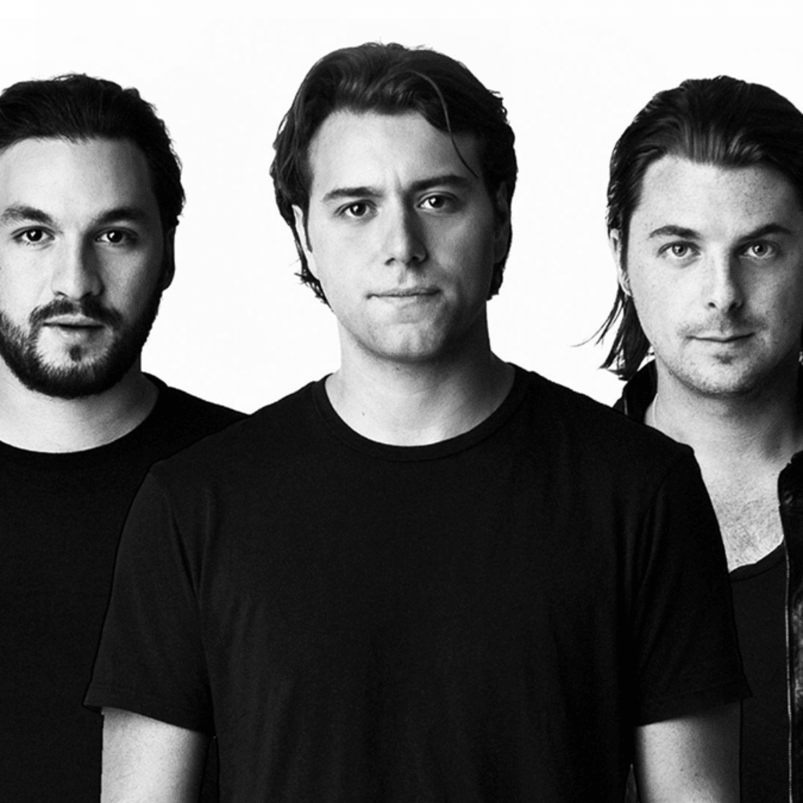

Swedish House Mafia
Swedish House Mafia (SHM) is a Swedish house music supergroup consisting of Axwell, Steve Angello and Sebastian Ingrosso. The group officially formed in late 2008, were placed at number ten on the DJ Mag Top 100 DJ Poll 2011, and have been called "the faces of mainstream progressive house music", while being credited for "setting the tone for the EDM boom of the early 2010s, more than any other act in modern dance music". In 2012, they were ranked at number twelve on the DJ Mag Top 100 Poll. The trio is best known for their biggest hit single to date, "Don't You Worry Child".